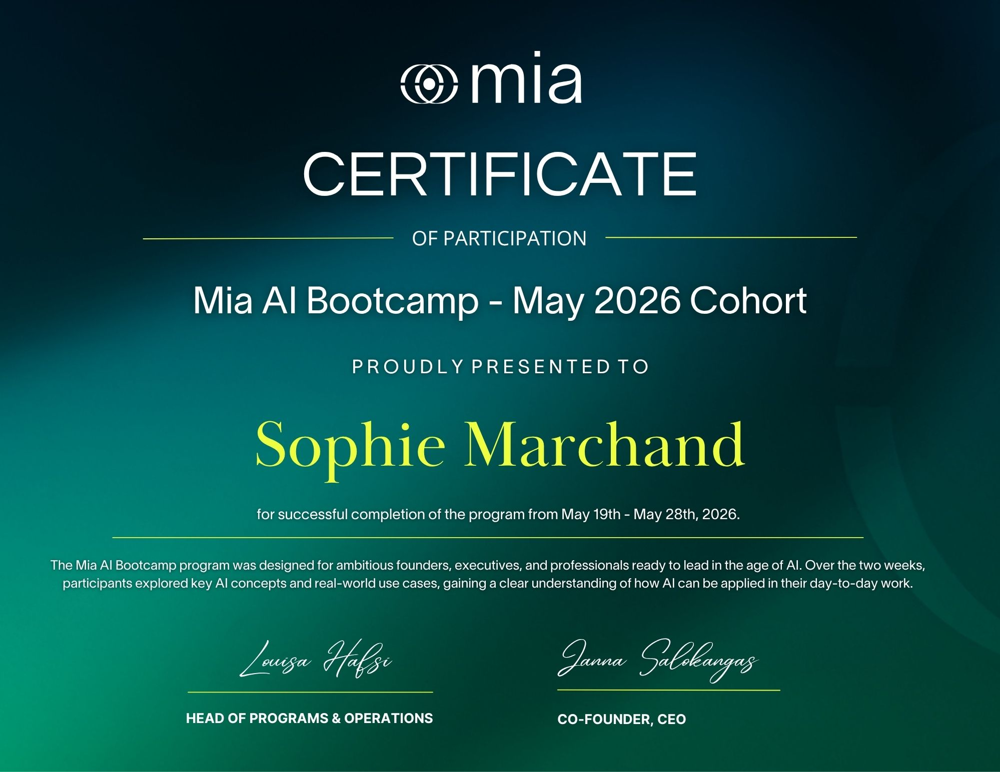

AI Portfolio · 2026
Sophie
Marchand
Senior Marketing Manager
I turn brand strategy into measurable growth — and use AI to make every hour count, at work and at home.

Senior Marketing Manager
I turn brand strategy into measurable growth — and use AI to make every hour count, at work and at home.
About Me
I'm a Senior Marketing Manager who believes the best campaigns are built on sharp strategy, consistent brand voice, and smart systems. Over the past year I've embedded AI into every part of my workflow — from briefing to reporting — so my team can focus on the thinking that actually moves the needle. I'm a proud graduate of the Mia AI Bootcamp 2026, where I built the tools and frameworks that now power my day-to-day.
Featured Projects
Skills & Tools
✦ Certified Graduate
A two-week intensive for ambitious founders, executives, and professionals ready to lead in the age of AI. Participants explored key AI concepts and real-world use cases across business and personal workflows.

Whether you're curious about my AI workflow stack or want to talk brand strategy — I'd love to hear from you.